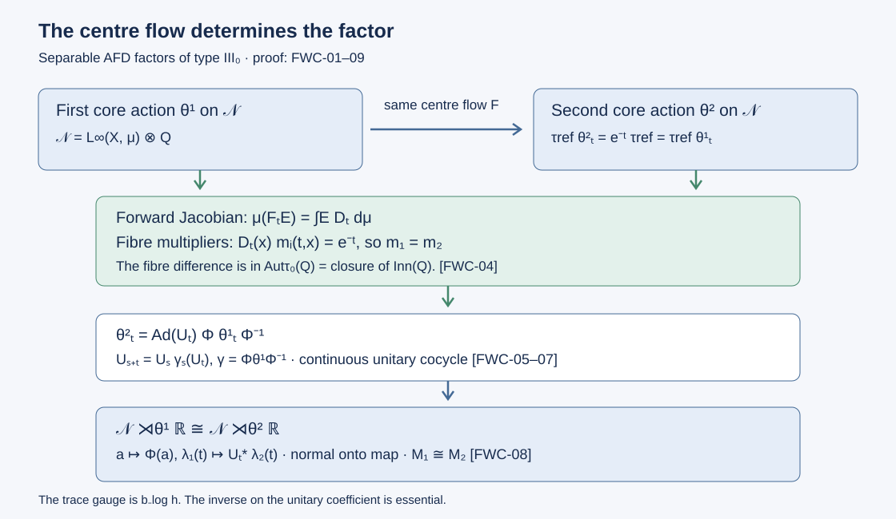

Classification by the flow of weights
For an approximately finite-dimensional factor of type \(\mathrm{III}_0\), the flow on the centre of the continuous core determines the factor. The proof must recover more than a family of abstractly isomorphic fibres. We construct a measurable identification of the entire core, normalize its specified trace, compare the resulting actions, and implement the comparison by a genuine unitary cocycle.
Throughout, all von Neumann algebras have separable predual. AFD means generated by an increasing sequence of finite-dimensional subalgebras. Isomorphisms are normal unital star isomorphisms. A conjugacy of measured flows is a measure-class isomorphism intertwining their actions; it need not preserve a particular representative measure.
Classification theorem. Two AFD factors of type \(\mathrm{III}_0\) are isomorphic if and only if their flows of weights are conjugate. Each such factor is isomorphic to \(L^\infty(Y,\nu)\rtimes_\alpha\mathbb Z\), where \(\alpha(f)=f\circ S^{-1}\) for a free ergodic nonsingular transformation \(S\) of a standard sigma-finite measure space.
We use the full continuous decomposition in CDEC, Section 3, the standard-field construction in MSF, Sections 2–5, the measured selection proof Choose a witness after completing the measure, and the countable-relation comparison and paired strictification in 3. The limiting cohomology theorem through 4. Measurable flows and their return cocycles. The injectivity and approximation inputs are the earlier programme proofs cited where they enter. In particular, the trace-preserving restriction in Section 4 is part of the argument.
1. Identify the factor fibres of the core
Let \(M\) be an AFD factor of type \(\mathrm{III}_0\), and choose a faithful normal state \(\varphi\). Continuous decomposition gives
\[ N=M\rtimes_{\sigma^\varphi}\mathbb R,\qquad \tau\theta_t=e^{-t}\tau,\qquad N\rtimes_\theta\mathbb R\cong M, \tag{FWC.1} \]where \(\theta\) is the dual action and \(\tau\) is its specified faithful normal semifinite trace. The last map is the normal double-duality isomorphism followed by the explicit type III amplification absorption in CDEC-01–03. The algebra \(N\) is type \(\mathrm{II}_\infty\) in the unrestricted sense: it has no nonzero abelian projection and its unit is properly infinite.
AFD algebras are injective, and crossing by the amenable group \(\mathbb R\) preserves injectivity, by Averaging, crossed products and injectivity, Theorem 2.3. Thus \(N\) is injective. Properly infinite injective algebras and dyadic approximation, Theorem 4.2 supplies increasing unital matrix algebras \(D_n\) whose union generates \(N\).
Write \(Z(N)=L^\infty(X,\mu)\), using an equivalent probability measure on a standard Borel model. Central decomposition Existence over any specified central abelian subalgebra through Exact common-null-set localization of specified data, with the full standard-field construction MSF, gives
\[ (N,H,J,P)=\int_X^\oplus(N_x,H_x,J_x,P_x)\,d\mu(x), \tag{FWC.2} \]with factor fibres, countable strong-star dense families of contractions in their algebras, and countable norm-dense families in their standard cones. All statements about fibres in this section are on one conull set.
Here are the type and approximation checks. The weight disintegration Central disintegration of a separable weighted algebra disintegrates \(\tau\) into faithful normal semifinite fibre weights. Its full modular-group identification makes the fibre modular actions trivial: localize the identity \(\sigma_t^\tau=\mathrm{id}\) on countably many algebra generators for rational \(t\), then use continuity for all real \(t\). Hence the fibre weights are traces. Two isometries witnessing proper infiniteness of \(1_N\) decompose into isometries with orthogonal ranges in \(N_x\); this excludes finite factors.
We also exclude type I fibres without assuming that a type label automatically disintegrates. Trivialize the measurable Hilbert fields on their dimension strata by Compact orthonormal frames and measurable dimension. Consider the pairs \((x,p)\) such that \(p\in (N_x)_1\) is a nonzero projection and \(pN_xp\) is abelian. This is a Borel relation. Membership in \((N_x)_1\) is tested by zero distance from its countable strong-star dense family; projection identities are strong-star continuous on bounded sets; nonzeroness is detected by a countable Hilbert frame. If \(a_j(x)\) is the dense family, abelianness is exactly
\[ [p a_j(x)p,\ p a_k(x)p]=0\qquad(j,k\geq1). \tag{FWC.3} \]Bounded strong-star approximation extends these identities to all of \(pN_xp\).
If this relation projected onto a set of positive measure, SCF-05 would give a completed-measurable selector and then a Borel version on a conull subset of that set. Extend it by zero. Its direct integral would be a nonzero abelian projection in \(N\): every pair of elements in its corner commute fibrewise. Nonzeroness follows by testing the selected projections on the countable frame. This contradicts the type assertion in (FWC.1). A type I factor has a nonzero abelian projection, so \(N_x\) is of type \(\mathrm{II}_\infty\) almost everywhere.
The countably many matrix-unit and inclusion relations of \(D_n\) localize simultaneously. Put \(B_x=(\bigcup_nD_n(x))''\). The integral of these measurable generated algebras is contained in \(N\), contains every \(D_n\), and contains the diagonal algebra. It therefore equals \(N\). The commutant and uniqueness statements DC-04 and DC-09 imply \(B_x=N_x\) almost everywhere. Each \(N_x\) is AFD and hence injective.
Set \(Q=R\overline\otimes B(\ell^2)\), with a fixed faithful normal semifinite trace \(\tau_0\). Every \(N_x\) is isomorphic to \(Q\). Indeed choose a nonzero finite-trace projection \(e\in N_x\), and write \(c=\tau_x(e)\). The corner is injective: compress a ucp retraction onto \(N_x\) by \(e\) to obtain one onto \(eN_xe\). Thus it is an injective \(\mathrm{II}_1\) factor and is isomorphic to \(R\), by Small corners and the second injective proof, Theorem 4.1.
Here is the countable amplification argument, including a possible leftover projection. The projection comparison theorem, Theorem 5.5 makes any two projections in a factor comparable. If a projection \(p\) has trace at least \(c\), this implies \(e\precsim p\): in the other comparison direction, \(p\) is equivalent to a subprojection of \(e\), and faithfulness of the trace forces equality when its trace is at least \(c\).
Take a maximal orthogonal family of copies \(e_n\) of \(e\), including \(e\). A faithful normal state makes this family countable. It is infinite, since the complement of finitely many finite-trace projections has infinite trace and so contains another copy. Its remaining projection \(r=1-\sum_ne_n\) has trace \(a<c\), by maximality and the preceding comparison.
Inside each \(e_nN_xe_n\cong R\), choose \(f_n\leq e_n\) of trace \(c-a\). To see that such a trace cut exists, use the diagonal of the dyadic matrix product for \(R\): its projections onto the first \(\lfloor2^ks\rfloor\) ordered binary words at level \(k\) increase and have normalized traces \(2^{-k}\lfloor2^ks\rfloor\). Their supremum has trace \(s\), for every \(0\leq s\leq1\). The identification of the normalized corner trace with the product trace follows from trace uniqueness TR-04. Apply this with \(s=(c-a)/c\).
Put \(r_0=r\), \(r_n=e_n-f_n\), and \(q_n=r_{n-1}+f_n\). The \(q_n\) are mutually orthogonal, each has trace \(c\), and their sum is \(r+\sum_ne_n=1\). Equal finite trace and projection comparison give \(q_n\sim e\). Choose \(v_n^*v_n=e\), \(v_nv_n^*=q_n\). The map \(W:eH_x\otimes\ell^2\to H_x\), \(W(\xi\otimes\delta_n)=v_n\xi\), is unitary. The matrix entries of \(W^*AW\) are \(v_i^*Av_j\in eN_xe\). Conversely, finite coefficient matrices are sent to \(\sum_{i,j}v_i a_{ij}v_j^*\in N_x\); their bounded finite compressions converge strongly to the image of every bounded coefficient matrix. This proves the normal onto identification \(N_x\cong eN_xe\overline\otimes B(\ell^2)\), including its inverse. These are pointwise isomorphisms; their measurable assembly is a separate step.
2. Choose the field identifications measurably
Put \(Q\) in its standard form \((Q,H_0,J_0,P_0)\). The Hilbert spaces \(H_x\) in (FWC.2) are infinite-dimensional and separable. The Borel frames of DF-02 identify them measurably with \(H_0\). Transport \(N_x\) and \(P_x\) to this fixed Hilbert space.
Let \(a_j(x)\) be a strong-star dense sequence in \((N_x)_1\), and \(q_k\) such a sequence in \(Q_1\). Let \(\xi_j(x)\) and \(\eta_k\) be norm-dense sequences in \(P_x\cap(H_0)_1\) and \(P_0\cap(H_0)_1\). Use a metric \(d_*\) for the strong-star topology on the operator unit ball. A unitary \(v\) identifies both algebras and both cones exactly when
\[ \begin{aligned} \inf_k d_*(v a_j(x)v^*,q_k)&=0 &&(j\geq1),\\ \inf_j d_*(v^*q_kv,a_j(x))&=0 &&(k\geq1),\\ \inf_k\|v\xi_j(x)-\eta_k\|&=0 &&(j\geq1),\\ \inf_j\|v^*\eta_k-\xi_j(x)\|&=0 &&(k\geq1). \end{aligned} \tag{FWC.4} \]These are countably many Borel tests on \(X\times\mathcal U(H_0)\), where the unitary group has its strong topology. Multiplication and adjoints of bounded operators have the required strong-star continuity; the measurable coordinates are those constructed in MSF-05. The density and closedness of both unit balls and cones prove the asserted equivalence.
Each fibre of (FWC.4) is nonempty: Section 1 gives an algebra isomorphism, and standard implementation Patching the unique comparisons gives its cone-preserving unitary. Apply SCF-05 to this Borel relation, obtaining a completed-measurable selector, then take its Borel version on a conull Borel set. Denote it by \(v_x\).
Conjugating measurable bounded sections now gives
\[ \kappa:N\longrightarrow L^\infty(X,\mu)\overline\otimes Q, \qquad \kappa(A)(x)=v_xA(x)v_x^*. \tag{FWC.5} \]Every bounded measurable \(Q\)-valued section is in the tensor product, by the countably valued approximation in MSF or Ancillary actions, Lemma 2.1. The inverse field \(v_x^*B(x)v_x\) is likewise measurable and bounded. The decomposable unitary \(\int^\oplus v_x\,d\mu\) implements both maps, so they are normal and inverse on the whole algebras. The map \(\kappa\) fixes the centre.
The selector need not be canonical. Its existence uses completed-measure selection, rather than a claim that an arbitrary family of abstract isomorphisms is measurable. No flow-invariance of this first conull choice is required; flow representatives will be treated separately in Section 5.
3. Normalize the specified trace
On the tensor product in (FWC.5), define
\[ \tau_{\mathrm{ref}}(B)=\int_X\tau_0(B(x))\,d\mu(x) \quad(B\geq0), \tag{FWC.6} \]allowing infinite values. The trace comparison The density of a trace is central gives a central density \(h\) with
\[ \begin{aligned} \tau(\kappa^{-1}(B))&=\int_Xh(x)\tau_0(B(x))\,d\mu(x),\\ 0<h(x)&<\infty\quad\text{almost everywhere}. \end{aligned} \tag{FWC.7} \]Faithfulness excludes zero; semifiniteness and the dense domain of the affiliated density exclude an infinite value on a positive-measure central part.
There is a continuous action \(b_s\) on \(Q\) with \(\tau_0b_s=e^{-s}\tau_0\), by Central sequences and the module circle, Lemma 5.1. That construction uses the continuous core of an explicit tensor product of two Powers factors and the finite injective-factor theorem; it does not assume the classification theorem being proved here.
Define
\[ \iota(A)(x)=b_{-\log h(x)}(\kappa(A)(x)). \tag{FWC.8} \]The action is continuous and \(h\) is Borel after a null modification, so this is a measurable automorphism field. Its inverse uses \(b_{\log h(x)}\). Their standard implementations give normal inverse algebra maps, and
\[ \tau_{\mathrm{ref}}(\iota(A)) =\int_X h(x)\tau_0(\kappa(A)(x))\,d\mu(x) =\tau(A)\qquad(A\geq0). \tag{FWC.9} \]This calculation holds on the full positive cone.
Now suppose \(M_1,M_2\) have conjugate flows of weights. Use the spatial measure-class realization Change of base and the square-root density in general uniqueness to identify their centres with the same \(L^\infty(X,\mu)\) and their centre actions with the same nonsingular flow \(F\). Apply (FWC.8) separately to their specified traces, using this common \(\mu\) and \(\tau_0\). We have identified both core systems with actions \(\theta^1,\theta^2\) on
\[ \mathcal N=L^\infty(X,\mu)\overline\otimes Q,\qquad \tau_{\mathrm{ref}}\theta^i_t=e^{-t}\tau_{\mathrm{ref}}, \tag{FWC.10} \]whose common centre action is \(f\mapsto f\circ F_{-t}\). The flow \(F\) is properly ergodic by ZDC, Section 2. Equality of the representative base measures was produced by the trace normalization; it was not assumed from flow conjugacy.
4. Compute the fibre trace multipliers
Localizing the two continuous actions, using Localizing factor actions, Theorem 5.2, gives jointly Borel maps \(\rho_i:\mathbb R\times X\to\operatorname{Aut}(Q)\) with
\[ (\theta^i_tA)(F_tx)=\rho_i(t,x)(A(x)). \tag{FWC.11} \]Their cocycle identities hold almost everywhere for each fixed pair of times. We will not evaluate these representatives on a return section before strictifying them.
Let \(D_t\) denote the forward Jacobian
\[ \mu(F_tE)=\int_ED_t(x)\,d\mu(x). \tag{FWC.12} \]Automorphisms of the semifinite factor scale its trace by a positive scalar, by TR-04. Write \(\tau_0\rho_i(t,x)=m_i(t,x)\tau_0\). The multiplier is measurable: if \(e\) is a fixed projection with \(\tau_0(e)=1\), it equals \(\tau_0(\rho_i(t,x)(e))\). Here the required Borel and lower-semicontinuity assertion has a direct proof. For the finite-coordinate projections \(p_n=1_R\otimes P_n\uparrow1_Q\), traciality and normality give
\[ \tau_0(a)=\sup_n\tau_0(p_nap_n)\qquad(a\in Q_+). \tag{FWC.12a} \]Indeed \(\tau_0(p_nap_n)=\tau_0(a^{1/2}p_na^{1/2})\), and the latter positive operators increase to \(a\). Each functional \(a\mapsto\tau_0(p_nap_n)\) is bounded and normal, so (FWC.12a) is a countable supremum of continuous functions on bounded strong-star sets. This proves both assertions used here and in the closed-subgroup argument below.
Apply (FWC.10) to \(A=1_Ee\) and change variables in (FWC.6). For every Borel \(E\),
\[ \int_E D_t(x)m_i(t,x)\,d\mu(x)=e^{-t}\mu(E). \]Uniqueness of scalar densities therefore gives
\[ D_t(x)m_i(t,x)=e^{-t},\qquad m_1(t,x)=m_2(t,x) \tag{FWC.13} \]almost everywhere for each fixed \(t\).
Set
\[ G=\operatorname{Aut}(Q),\qquad H=\operatorname{Inn}(Q),\qquad K=\operatorname{Aut}_{\tau_0}(Q). \tag{FWC.14} \]The standard-implementation topology makes \(G\) Polish. \(H\) is normal Borel and admits a normalized Borel choice of implementing unitaries, by Ancillary actions, Lemma 1.1. The trace-scaling homomorphism makes \(K\) normal.
In fact \(K=\overline H\). Every trace-preserving automorphism of \(Q\) is approximately inner by Trace scaling on the hyperfinite semifinite factor, Proposition 5.1. Conversely, \(K\) is closed. If \(\eta_n\in K\) and \(\eta_n\to\eta\) in \(G\), standard implementers give strong convergence on each bounded positive element. Lower semicontinuity gives \(\tau_0(\eta(a))\leq\tau_0(a)\). Apply the same argument to \(\eta_n^{-1}\to\eta^{-1}\) and to the positive element \(\eta(a)\) to get the opposite inequality, including infinite values. Hence \(\eta\in K\).
Equation (FWC.13) now says
\[ \rho_2(t,x)\rho_1(t,x)^{-1}\in K=\overline H \tag{FWC.15} \]almost everywhere for each fixed time. It does not assert that arbitrary automorphisms of \(Q\) are approximately inner: trace-scaling automorphisms with nonunit multiplier are outside \(K\).
5. Compare the strict return cocycles
Apply the paired strictification in CLR-04 to the closed Polish subgroup
\[ L=\{(g_1,g_2)\in G^2:g_2g_1^{-1}\in K\}. \tag{FWC.16} \]Replacing a representative pair by \((1,1)\) where it is outside \(L\) changes a null set at each fixed time and preserves the fixed-pair almost-everywhere laws. The theorem supplies a Borel pair \(d=(d_1,d_2):X\to L\) and a strict \(L\)-valued cocycle pair \((\sigma_1,\sigma_2)\) on an invariant conull model such that
\[ \sigma_i(t,x)=d_i(F_tx)\rho_i(t,x)d_i(x)^{-1} \tag{FWC.17} \]almost everywhere for each fixed \(t\). In particular the two differences in \(L\) remain in \(K\) everywhere on the strict model.
The suspension construction L38, as used in CLR-04, writes this model as
\[ X_r=\{(z,u):0\leq u<r(z)\},\qquad r(z)\geq\delta>0, \]over an aperiodic nonsingular transformation \(T\). Let \(R_n(z)\) be its signed roof sums. If \(F_t(z,u)=(T^nz,v)\), then \(u+t=R_n(z)+v\). Define
\[ a_i(z,u)=\sigma_i(u,(z,0)),\qquad c_i(T^nz,z)=\sigma_i(R_n(z),(z,0)). \tag{FWC.18} \]These are Borel; the return maps \(c_i\) are strict homomorphisms on the countable orbit relation. Every arrow factors as
\[ \sigma_i(t,(z,u)) =a_i(T^nz,v)c_i(T^nz,z)a_i(z,u)^{-1}. \tag{FWC.19} \]Using the strict model makes (FWC.18) legitimate even though the section has ambient measure zero.
The marker construction in L37 gives an increasing finite exhaustion of the return relation. CLR-03, with the \(H,K\) of (FWC.14), supplies Borel \(g:Z\to K\) and \(\ell:R_T\to H\) with
\[ c_2(y,z)=\ell(y,z)g(y)c_1(y,z)g(z)^{-1}. \tag{FWC.20} \]The theorem's errors stabilize exactly on old finite relations; taking a limit only in \(K\) without that stabilization would not prove \(\ell\in H\).
Put
\[ \begin{aligned} k(z,u)&=a_2(z,u)g(z)a_1(z,u)^{-1},\\ \gamma'(t,x)&=k(F_tx)\sigma_1(t,x)k(x)^{-1}. \end{aligned} \tag{FWC.21} \]Normality of \(K\) and \(a_2a_1^{-1}\in K\) imply \(k\in K\). The cocycle \(\gamma'\) is strict. Substituting (FWC.19)–(FWC.20) gives, for \(x=(z,u)\), \(F_tx=(y,v)\),
\[ \begin{aligned} \sigma_2(t,x)&=h'(t,x)\gamma'(t,x),\\ h'(t,x)&=a_2(y,v)\ell(y,z)a_2(y,v)^{-1}\in H. \end{aligned} \tag{FWC.22} \]This is an inner automorphism correction at every arrow of the strict model. A unitary correction with the exact cocycle law requires one more construction.
6. Remove the scalar composition defect
Use the normalized Borel section of \(H\) to choose \(w(t,x)\in\mathcal U(Q)\) with \(\operatorname{Ad}w(t,x)=h'(t,x)\) and \(w(0,x)=1\). Work in the Polish semidirect group
\[ \mathcal P=\mathcal U(Q)\rtimes G,\qquad (u,\eta)(v,\zeta)=(u\eta(v),\eta\zeta). \tag{FWC.23} \]Its multiplication is continuous because the canonical standard implementations make \((\eta,v)\mapsto\eta(v)\) continuous on unitaries. Define \(A(t,x)=(w(t,x),\gamma'(t,x))\).
Both \(\sigma_2\) and \(\gamma'\) are strict cocycles. Equation (FWC.22) implies that the composition defect of \(A\) belongs to the closed central subgroup
\[ \mathcal T=\{(\lambda1,\mathrm{id}):\lambda\in\mathbb T\}. \]Indeed the automorphism components compose exactly, and the two unitary products implement the same inner automorphism of the factor \(Q\), so their quotient is scalar.
We give the correction explicitly, following Return arrows, Theorem 3.1. Set \(q(z)=A(r(z),(z,0))\). On positive return arrows define
\[ B_0(T^nz,z)=q(T^{n-1}z)\cdots q(Tz)q(z). \tag{FWC.24} \]Use \(B_0(z,z)=1\), and assign the inverse product to a reversed arrow. Cancellation along the integer orbit proves \(B_0(w,y)B_0(y,z)=B_0(w,z)\) for all signed return chains. Successive multiplication modulo \(\mathcal T\) also gives
\[ B_0(T^nz,z)\mathcal T=A(R_n(z),(z,0))\mathcal T. \tag{FWC.25} \]No choice in a nonstandard quotient is involved in this formula.
Write \(A_{\mathrm v}(z,u)=A(u,(z,0))\). For \(x=(z,u)\), \(F_tx=(y,v)\), set
\[ B(t,x)=A_{\mathrm v}(y,v)B_0(y,z)A_{\mathrm v}(z,u)^{-1}. \tag{FWC.26} \]This is jointly Borel and unit normalized. At composable arrows the middle vertical factors cancel and the return products concatenate. Thus \(B\) is a strict cocycle. The down-return-up factorization and (FWC.25) give \(B(t,x)\mathcal T=A(t,x)\mathcal T\) at every arrow.
Consequently \(B=(u',\gamma')\), with exactly the same automorphism component as \(A\), and
\[ \begin{aligned} \sigma_2(t,x)&=\operatorname{Ad}u'(t,x)\,\gamma'(t,x),\\ u'(s+t,x)&=u'(s,F_tx)\, \gamma'(s,F_tx)\bigl(u'(t,x)\bigr). \end{aligned} \tag{FWC.27} \]These are strict identities. The semidirect product is essential: the second factor acts on the unitary in the twisted cocycle law.
7. Integrate a continuous unitary cocycle
Restore the gauges of (FWC.17) by putting
\[ \begin{aligned} f(x)&=d_2(x)^{-1}k(x)d_1(x),\\ u(t,x)&=d_2(F_tx)^{-1}\bigl(u'(t,x)\bigr). \end{aligned} \tag{FWC.28} \]The paired gauge condition implies \(f\in K\): write it as \((d_2^{-1}kd_2)(d_2^{-1}d_1)\) and use normality. The field automorphism
\[ \Phi(A)(x)=f(x)(A(x)) \tag{FWC.29} \]is therefore normal, fixes the centre, and preserves \(\tau_{\mathrm{ref}}\).
Let \(\gamma_t=\Phi\theta^1_t\Phi^{-1}\). Its field cocycle, almost everywhere for each fixed \(t\), is
\[ \gamma(t,x)=f(F_tx)\rho_1(t,x)f(x)^{-1}. \tag{FWC.30} \]Substitute (FWC.17) into (FWC.27) and cancel the outer \(d_2\) factors. This proves
\[ \rho_2(t,x)=\operatorname{Ad}u(t,x)\,\gamma(t,x) \tag{FWC.31} \]for each fixed time, and the twisted unitary law for each fixed pair of times. Equivalently, restore the strict cocycle \(\gamma'\) using \(d_2\) first; that restored field is strictly defined and agrees with (FWC.30) at each fixed time almost everywhere. This avoids any uncountable intersection of exceptional sets.
Define a unitary in \(\mathcal N\) by
\[ U_t(y)=u(t,F_{-t}y). \tag{FWC.32} \]The change from source to range coordinates converts (FWC.27) into
\[ \theta^2_t=\operatorname{Ad}U_t\,\gamma_t,\qquad U_{s+t}=U_s\gamma_s(U_t),\qquad U_0=1. \tag{FWC.33} \]For example, evaluate the right side of the cocycle equation at \(y=F_{s+t}x\). Its two factors are \(u(s,F_tx)\) and \(\gamma(s,F_tx)(u(t,x))\), exactly the two factors of the field law. Fixed-pair almost-everywhere equality is equality in the von Neumann algebra and suffices for every \(s,t\).
The map \(t\mapsto U_t\) is Borel for the strong unitary topology. On a countable fundamental family of simple \(L^2(X;H_0)\) vectors, the norms and inner products of its multiplication fields are Borel integrals of the jointly Borel matrix coefficients in (FWC.32). Their uniform norm bound extends measurability to all vectors.
It is actually strongly continuous. The map
\[ t\longmapsto(U_t,\gamma_t) \]is a Borel homomorphism into the Polish group \(\mathcal U(\mathcal N)\rtimes\operatorname{Aut}(\mathcal N)\). The Borel-homomorphism argument in Localizing factor actions, Lemma 4.2 proves continuity: cover the target by countably many translates of a small neighborhood, select a preimage subset of positive finite Haar measure, and use continuity of translations in \(L^1(\mathbb R)\) to put a neighborhood of zero in its difference set. Applying the homomorphism sends that neighborhood into the prescribed target neighborhood. Thus (FWC.33) is a continuous unitary cocycle conjugacy of the full core actions.
8. Identify the full normal crossed products
We prove the crossed-product step on the regular representations. Let \(\alpha,\beta\) be continuous actions on a von Neumann algebra \(A\), with \(\beta_t=\operatorname{Ad}U_t\alpha_t\) and \(U_{s+t}=U_s\alpha_s(U_t)\). Represent \(A\) faithfully and normally on \(H\). On \(L^2(\mathbb R,H)\), write
\[ (\pi_\alpha(a)\xi)(r)=\alpha_{-r}(a)\xi(r),\qquad (\lambda_\alpha(t)\xi)(r)=\xi(r-t), \tag{FWC.34} \]and likewise for \(\beta\). Multiplication by \(U_{-r}^*\) defines a unitary \(W\). Direct calculation gives
\[ \begin{aligned} W\pi_\beta(a)W^*&=\pi_\alpha(a),\\ W\lambda_\beta(t)W^*&=\pi_\alpha(U_t)\lambda_\alpha(t). \end{aligned} \tag{FWC.35} \]For the second equality the multiplication coefficient is
\[ U_{-r}^*U_{t-r}=\alpha_{-r}(U_t), \]by the cocycle law. These images generate the entire \(\alpha\)-crossed product, since the first line includes all of \(A\) and \(U_t\in A\) recovers each translation unitary from the second line. Hence conjugation by \(W\) restricts to a normal onto isomorphism. Its inverse sends
\[ a\longmapsto a,\qquad \lambda_\alpha(t)\longmapsto U_t^*\lambda_\beta(t). \tag{FWC.36} \]Normality and the whole inverse follow from unitary conjugation, without a passage from a universal C*-completion.
For (FWC.33), first transport \(\theta^1\) to \(\gamma\) using the canonical standard implementer of \(\Phi\), applied pointwise on the regular Hilbert space. Then apply (FWC.36). The resulting normal isomorphism is
\[ \begin{aligned} \mathcal N\rtimes_{\theta^1}\mathbb R &\longrightarrow \mathcal N\rtimes_{\theta^2}\mathbb R,\\ a&\longmapsto\Phi(a),\\ \lambda_1(t)&\longmapsto U_t^*\lambda_2(t). \end{aligned} \tag{FWC.37} \]Combining it with the two normal recovery isomorphisms (FWC.1) proves that conjugate flows of weights give isomorphic factors.

The diagram records the maps proved in FWC-03–08. Both core traces are first identified with \(\tau_{\mathrm{ref}}\); the field comparison produces \(\Phi\), and the return construction produces \(U\). The normal map on the final row has the generator formula (FWC.37). The flow, the trace gauge, and the unitary coefficient retain their specified directions.
9. Prove necessity and obtain an abelian integer model
Suppose \(\psi:M_1\to M_2\) is an isomorphism. For a faithful normal state \(\varphi_1\), set \(\varphi_2=\varphi_1\circ\psi^{-1}\). Modular transport gives
\[ \psi\sigma_t^{\varphi_1}=\sigma_t^{\varphi_2}\psi. \]Its canonical standard implementer, applied pointwise to the regular representations, gives a normal onto core isomorphism with generator formulas
\[ \pi_1(a)\longmapsto\pi_2(\psi(a)),\qquad \lambda_1(t)\longmapsto\lambda_2(t). \tag{FWC.38} \]These formulas intertwine the dual actions: the coefficients are fixed and each translation unitary is multiplied by the same scalar \(e^{-ist}\). Restriction to the centres is therefore a flow conjugacy. The weight-change isomorphisms in CORE, Sections 5–8, or their regular cocycle construction as in Section 8, intertwine the dual actions as well. Thus (FWC.38) identifies the flows of weights, independently of the chosen state. This proves necessity.
For the integer model, apply Odometer carries and realization of a measured flow, 1. Carry counts for all integer powers through 8. Calculations with complete solutions to the properly ergodic flow of \(M\). It constructs a free ergodic nonsingular transformation \(S\) on a standard sigma-finite \((Y,\nu)\). Its orbit relation \(\mathcal R_S\) is hyperfinite, its principal relation algebra is an AFD factor of type \(\mathrm{III}_0\), and its flow is the prescribed flow. Sufficiency, already proved, gives \(M\cong M(\mathcal R_S)\).
For completeness, the last algebra is exactly the normal integer crossed product. Give \(\mathcal R_S\) source-counting measure and identify its Hilbert space with \(\ell^2(\mathbb Z;L^2(Y,\nu))\) by
\[ \xi(n,y)=\xi(S^ny,y). \tag{FWC.39} \]Freeness makes this parametrization one-to-one. Source counting makes it unitary, with no Jacobian factor. The range-diagonal action of \(f\in L^\infty(Y,\nu)\) becomes
\[ (\pi(f)\xi)(n,y)=f(S^ny)\xi(n,y) =\alpha_{-n}(f)(y)\xi(n,y), \tag{FWC.40} \]and left multiplication by the graph of \(S\) becomes \(\xi(n,y)\mapsto\xi(n-1,y)\). These are the regular generators of \(L^\infty(Y,\nu)\rtimes_\alpha\mathbb Z\).
Conversely, a Borel partial bijection with graph in \(\mathcal R_S\) has the form \(y\mapsto S^{n(y)}y\), where \(n(y)\) is Borel and integer-valued: its level sets are the countably many Borel tests for equality with \(S^ny\). Partitioning its domain by these levels expresses its graph operator as the strong sum of restricted integer-shift operators. The initial and final projections of the summands are pairwise orthogonal because it is a partial bijection. Thus all relation generators belong to the regular crossed product, while its two displayed generators belong to the relation algebra. The represented algebras are equal, proving the claimed normal identification.
This proves both assertions of the classification theorem. It classifies the factors and gives their abelian integer models; no identification of two specified Cartan subalgebras is asserted by this theorem.
10. Four checks on normalization and order
1. Compute the multiplier over a noninvariant base measure. Suppose \(D_t(x)=e^{c_t(x)}\). What multiplier must the fibre action have?
Solution. Equation (FWC.13) gives \(m_i(t,x)=e^{-t-c_t(x)}\). In particular, replacing a measure-class conjugacy by an unjustified measure-preserving one would lose the factor \(e^{-c_t(x)}\). Equality of the two specified trace scalings, after Section 3's normalization, is what gives equal fibre multipliers.
2. Check the sign in the trace gauge. If the density in (FWC.7) is the constant \(h=4\), which automorphism converts the target reference trace into the specified trace?
Solution. Use \(b_{-\log4}\), since \(\tau_0b_{-\log4}=4\tau_0\). Using \(b_{\log4}\) would give \(\tau_0/4\). Formula (FWC.8) is a map from the original algebra to the fixed reference-trace model, and its direction determines the sign.
3. Correct a scalar defect in the right direction. Suppose unitary representatives satisfy \(w_{s+t}=\lambda(s,t)w_s\alpha_s(w_t)\), and scalars satisfy \(a_{s+t}=\lambda(s,t)a_sa_t\). Which scalar correction gives a true cocycle?
Solution. Put \(v_t=a_t^{-1}w_t\). Then
\[ v_{s+t} =(\lambda(s,t)a_sa_t)^{-1}\lambda(s,t)w_s\alpha_s(w_t) =v_s\alpha_s(v_t). \]The correction \(a_tw_t\) would retain a squared scalar defect. Section 6 avoids guessing this direction by constructing the corrected cocycle itself through ordered return products.
4. Verify the inverse generator in the crossed-product map. In (FWC.37), why is the image \(U_t^*\lambda_2(t)\)?
Solution. Its conjugation on \(\Phi(a)\) is
\[ U_t^*\theta^2_t(\Phi(a))U_t =\gamma_t(\Phi(a))=\Phi(\theta^1_t(a)). \]Moreover,
\[ \begin{aligned} U_s^*\lambda_2(s)U_t^*\lambda_2(t) &=U_s^*\theta^2_s(U_t^*)\lambda_2(s+t)\\ &=\gamma_s(U_t^*)U_s^*\lambda_2(s+t)\\ &=U_{s+t}^*\lambda_2(s+t). \end{aligned} \]Thus the images satisfy both covariance and the group law. Section 8's explicit unitary proves the additional normality and surjectivity needed for the von Neumann crossed products.
References
The programme proofs used in the construction are central decomposition, measurable Hilbert fields, measurable weight fields, completed-measure selection, semifinite trace comparison, measured cohomology and strictification, and odometer flow realization.
The companion courses supply continuous decomposition, core trace and weight changes, standard factor fields, return-arrow correction, localization and continuous cocycles, injectivity under amenable crossing, dyadic approximation, finite injective factors, trace-preserving approximate innerness, and a coherent trace-scaling flow.